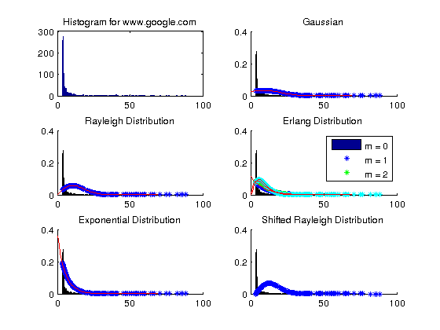
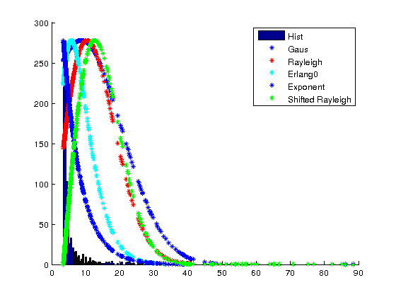

SSP Homework
Contents
iii)
load('out.mat')
close all
mu_g = sum(out)/length(out)
var_g = sum((out-mu_g).^2)/length(out)
var_ray = (1/(2*length(out))) * sum((out).^2)
lamda_0 = length(out)/sum(out)
lamda_1 = (2*length(out))/sum(out)
lamda_2 = (3*length(out))/sum(out)
alpha_exp = min(out)
Y = (out-alpha_exp);
lambda_exp = length(out)/sum(Y)
alpha_SR = min(out)
lambda_SR = (sum(((out-alpha_SR).^2)/(2*length(out))))
mu_g =
8.6374
var_g =
142.1568
var_ray =
108.3811
lamda_0 =
0.1158
lamda_1 =
0.2316
lamda_2 =
0.3473
alpha_exp =
3.4600
lambda_exp =
0.1931
alpha_SR =
3.4600
lambda_SR =
84.4814
iv)
figure('Name','Histogram','NumberTitle','off')
y_min = min(out);
y_max = max(out);
out_n = out;
g_out = sort(out_n);
subplot(3,2,1)
hist(out,200)
[f,x]=hist(out,200);
title('Histogram for www.google.com')
gaus = (1/(sqrt(2*pi*var_g)))*exp(-(((g_out)-mu_g).^2/(2*var_g)));
gaus_sec = (1/(sqrt(2*pi*var_g)))*exp(-(((.1:70)-mu_g).^2/(2*var_g)));
rayleigh = ((out/var_ray).*exp(-((out.^2)/(2*var_ray))));
rayleigh_sec = (((.1:70)/var_ray).*exp(-(((.1:70).^2)/(2*var_ray))));
erlang_0 = (lamda_0 * exp(-lamda_0*out_n));
erlang_0_2 = (lamda_0 * exp(-lamda_0*(.1:70)));
erlang_1 = ((lamda_1^2) .* out_n .* exp(-lamda_1*out_n));
erlang_1_2 = ((lamda_1^2) .* (.1:70) .* exp(-lamda_1*(.1:70)));
erlang_2 = (((lamda_2^3)/2) .* (out_n.^2) .* exp(-lamda_2*out_n));
erlang_2_2 = (((lamda_2^3)/2) .* ((.1:70).^2) .* exp(-lamda_2*(.1:70)));
exponent = (lambda_exp)*exp(-lambda_exp*(out-alpha_exp));
exponent_sec = (lambda_exp)*exp(-lambda_exp*((.1:70)-alpha_exp));
SR = ((out_n-alpha_SR)/lambda_SR).*exp(-1*(((out_n-alpha_SR).^2)/(2*lambda_SR)));
subplot(3,2,2)
hold on
bar(x,f/sum(f))
plot(g_out,gaus,'*')
plot(.1:70,gaus_sec,'r')
hold off
title('Gaussian')
subplot(3,2,3)
hold on
bar(x,f/sum(f))
plot(out_n,rayleigh,'*')
plot(.1:70,rayleigh_sec,'r')
hold off
title('Rayleigh Distribution')
subplot(3,2,4)
hold on
bar(x,f/sum(f))
plot(out_n,erlang_0,'*')
plot(out_n,erlang_1,'g*')
plot(out_n,erlang_2,'c*')
plot(.1:70,erlang_0_2,'r')
plot(.1:70,erlang_1_2,'r')
plot(.1:70,erlang_2_2,'r')
hold off
title('Erlang Distribution')
legend('m = 0','m = 1','m = 2')
subplot(3,2,5)
hold on
bar(x,f/sum(f))
plot(out_n,exponent,'*')
plot(.1:70,exponent_sec,'r')
hold off
title('Exponential Distribution')
subplot(3,2,6)
hold on
bar(x,f/sum(f))
plot(out_n,SR,'*')
hold off
title('Shifted Rayleigh Distribution')
figure('Name','Final Plot','NumberTitle','off')
hold on
hist(out,200)
plot(g_out,(1/max(gaus))*278*gaus,'*')
plot(out_n,(1/max(rayleigh))*rayleigh*278,'r*')
plot(out_n,(1/max(erlang_2))*erlang_2*278,'c*')
plot(out_n,(1/max(exponent))*exponent*278,'*')
plot(out_n,(1/max(SR))*SR*278,'g*')
legend('Hist','Gaus','Rayleigh','Erlang0','Exponent','Shifted Rayleigh')
 
v)
Name = {'Gaus','Rayleigh','Erlang 0','Erlang 1','Erlang 2','Exponential','SR'};
maxlikelihood(1) = max(sum(log(gaus)));
maxlikelihood(2) = max(sum(log(rayleigh)));
maxlikelihood(3) = max(sum(log(erlang_0)));
maxlikelihood(4) = max(sum(log(erlang_1)));
maxlikelihood(5) = max(sum(log(erlang_2)));
maxlikelihood(6) = max(sum(log(exponent)));
maxlikelihood(7) = max(sum(log(SR)));
[val ind] = max((maxlikelihood))
Name(ind)
val =
-2.6443e+03
ind =
6
ans =
'Exponential'